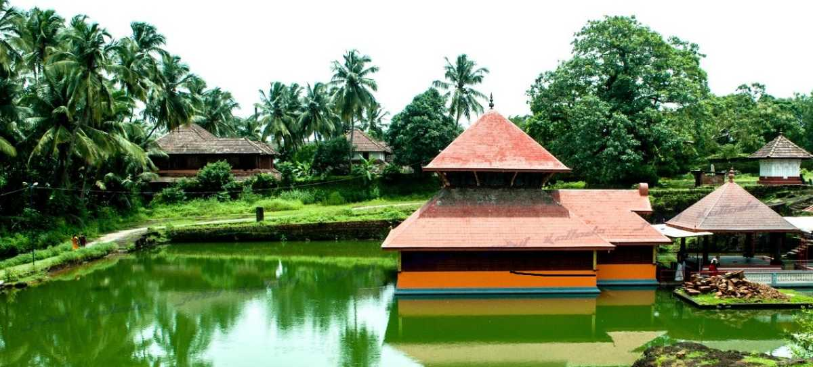

Ranipuram
The gentle hills of Ranipuram in Kerala are famous for its trekking trail. Situated at the height of about 750 meters above sea level, this destination has thick forest vegetation and lush green grasslands. The whole place is proposed inside the Ranipuram Wildlife Sanctuary which merges with Talakaveri Wildlife Sanctuary of Karnataka.
read more
Malom wild life santuary
A popular tourist attraction of Kanhagad region, Malom Wildlife Sanctuary is all about lush green tropical green forest and variety of wildlife.
read more

Ananthapura-lake-temple
Ananthapura Lake Temple is a serene Hindu temple built in the middle of a lake located in Village Ananthapura, Kasargod. It is a holy temple of Ananthapadmanabhan Swami.
read more